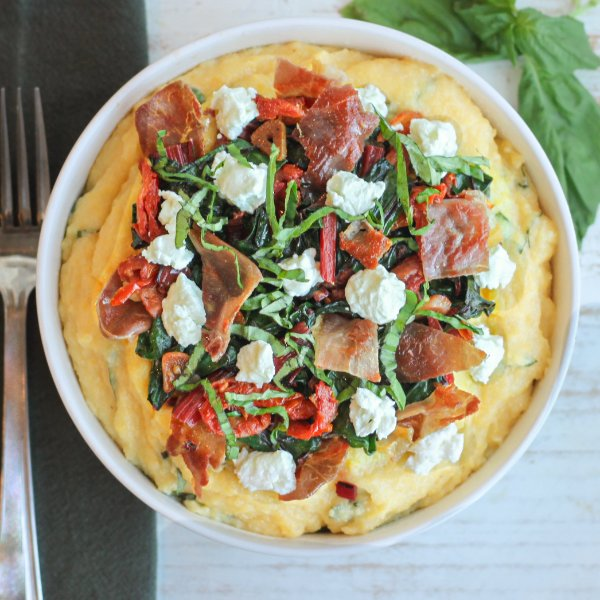

Polenta with Goat Cheese, Prosciutto, Swiss Chard & Sun-Dried Tomatoes

Prep Time
35 min
Nutrition (per serving)
599.6 kcalCalories
32.3 gProtein
51.7 gCarbs
31.8 gFat
Full nutrition table
| Calories | 599.6 kcal |
| Total fat | 31.8 g |
| Saturated fat | 18.1 g |
| Trans fat | 1 g |
| Cholesterol | 76.8 mg |
| Sodium | 1232.2 mg |
| Carbohydrates | 51.7 g |
| Fiber | 5.3 g |
| Sugars | 5.4 g |
| Protein | 32.3 g |
| Potassium | 1081.5 mg |
| Calcium | 209.3 mg |
| Iron | 7.8 mg |
| Vitamin A | 10498.3 IU |
| Vitamin C | 62.4 mg |
| Vitamin D | 17.1 IU |
Cookware
Ingredients
- 48 fl ozchicken or vegetable broth
- 1 small pkgfresh basil
- 4 clovesgarlic
- 2 (4 oz) logsgoat cheese
- 1 ½ cupspolenta (cornmeal)
- 8 slicesprosciutto
- 12sun-dried tomatoes, oil-packed
- 2 bunchesSwiss chard
- black pepper
- butter, unsalted
- salt
Steps
- In a medium saucepan, bring broth to a boil. Reduce heat to low and gradually add polenta in a thin steady stream, while whisking, until the polenta is incorporated; add salt. Cover and cook, stirring occasionally, until polenta is soft and the texture is creamy, 15-25 minutes.48 fl oz (6 cups) chicken or vegetable broth
1 ½ cups polenta (cornmeal)
½ tsp salt - Meanwhile, wash and dry chard; fold leaves in half lengthwise and slice off the stems. Cut leaves into bite-sized pieces and thinly slice the stems, keeping them separate. Place leaves in a medium bowl and stems in another medium bowl.2 bunches Swiss chard
- Preheat a large skillet over medium heat.
- While the skillet heats up, peel and thinly slice garlic. Add to the bowl with the stems and set aside.4 cloves garlic
- Once the skillet is hot, working in batches if necessary, add prosciutto and cook until crispy, about 1 minute per side. Remove to a plate and set aside. (Reserve skillet for the next step.)8 slices prosciutto
- Return skillet to medium heat, add butter, and swirl to coat the bottom. Add chard stems, garlic, salt, and pepper to the skillet; cook, stirring occasionally, until softened, about 3 minutes. (Reserve bowl for later use.)2 tbsp butter, unsalted
½ tsp salt
¼ tsp black pepper - Meanwhile, roughly chop sun-dried tomatoes. Add to the skillet and stir to combine.12 sun-dried tomatoes, oil-packed
- Add chard leaves to the skillet in handfuls, waiting for the leaves to wilt slightly before adding the next handful. Cook, stirring occasionally, until warmed through and tender, about 1 minute. Remove from heat.
- Wash, dry, and pick basil leaves off the stems; roll up crosswise, and thinly slice into ribbons. Place in the reserved bowl.1 small pkg fresh basil
- Crumble goat cheese into the bowl with the basil and stir to combine.2 (4 oz) logs goat cheese
- When the polenta is done, add butter, pepper, and half of both the basil and goat cheese to the pan, then stir to combine (reserve remaining basil and goat cheese for serving).2 tbsp butter, unsalted
¼ tsp black pepper - To serve, divide polenta and Swiss chard sauté between bowls. Crumble prosciutto over top, then sprinkle with reserved basil and goat cheese. Enjoy!